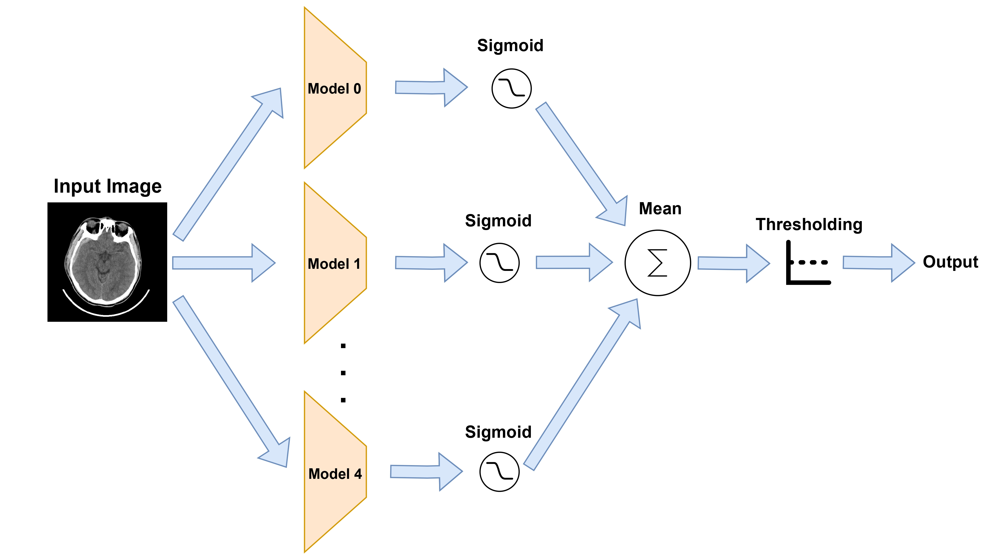

Comprehensive Hyperparameter Tuning to Enhance Deep Learning Performance for Intracranial Hemorrhage Classification
Published in IEEE ICRoM Conference, 2024
Abstract
Intracranial hemorrhages (ICHs) pose a critical medical challenge with a high mortality rate, necessitating timely and accurate diagnosis. This study focuses on enhancing the performance of deep learning models for classifying brain hemorrhages in CT scan images using the PhysioNet dataset. A grid search methodology was employed to tune hyperparameters, particularly addressing the imbalance between ICH and healthy slices. The study utilized ResNet50 for hyperparameter tuning, achieving significant improvements in sensitivity and overall performance through undersampling, bootstrapping, augmentation, and weighted loss techniques. The ResNet50 model demonstrated remarkable performance at the slice-level scope, achieving a sensitivity of 0.94, a specificity of 0.91, an F1 score of 0.64, and an accuracy of 0.91. It outperformed the literature in both sensitivity and accuracy, despite utilizing a smaller and more constrained dataset. At the patient-level scope, our approach achieved even higher metrics with a sensitivity of 1.00, a specificity of 0.80, an F1 score of 0.86, and an accuracy of 0.88, surpassing the literature across all reported metrics.
Keywords
Visuals

Visiual structure of decision making workflow.